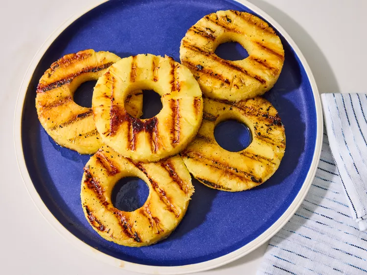

Grilled Pineapple

Description
Grilled pineapple is so easy and really good. Hot sauce gives it an extra kick and cuts the sweetness. Serve these as snacks while the rest of the grilled feast comes together but be warned, they go quickly!
Ingredients
- 1 fresh pineapple - peeled, cored and cut into 1-inch rings
- 3 tablespoons melted butter
- ¼ teaspoon honey
- 1 dash hot pepper sauce
- salt to taste
Steps
- Gather all ingredients.
- Place pineapple rings in a large resealable plastic bag. Add butter, honey, hot pepper sauce, and salt.
- Seal the bag and shake to coat evenly. Marinate for at least 30 minutes, or preferably overnight.
- Preheat an outdoor grill for high heat and lightly oil grate. Grill pineapple rings until heated through and grill marks appear, 2 to 3 minutes per side.